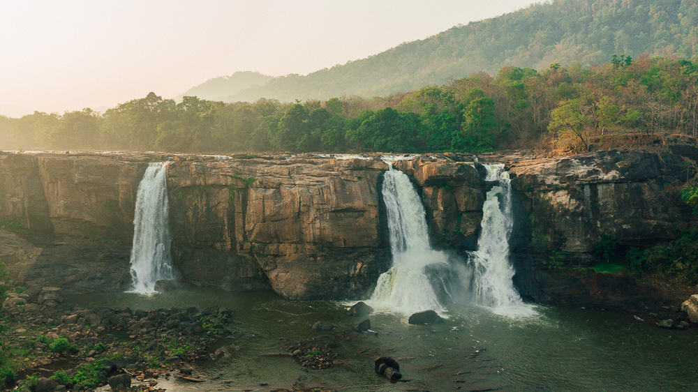

Thrissur
Thrissur, formerly Trichur, also known by its historical name Thrissivaperur, is a city and the headquarters of the Thrissur district in Kerala, India. It is the third largest city in Kerala after Kochi and Kozhikode, and the 21st largest in India. It is famous for the Thrissur Pooram festival. The city is built around a 65-acre (26 ha) hillock called the Thekkinkaadu Maidaanam which seats the Vadakkumnathan temple. It is located 304 kilometres (189 mi) north-west of the state's capital city, Trivandrum. Thrissur was once the capital of the Kingdom of Cochin. Thrissur is known as "Cultural Capital of Kerala" due of its cultural, spiritual and religious leanings throughout history. One of its main cultural events is the Thrissur Pooram, which attracts quite a number of tourists and travellers.
Athirappilly Waterfalls
The Athirappilly Falls is situated 1000 ft above sea level on the Chalakudy river, at the entrance to the Sholayar ranges of the Western Ghats, Athirappalli is a scenic combination of forests and little streams. Falling from a height of 80 feet, this is one of the largest waterfalls in the state. Many endangered and endemic species of flora and fauna are found in the forests of the Athirapilly-Vazhachal area. This area is the only place in the Western Ghats where four endangered hornbill species are seen. The Western Ghats is one of the most important biodiversity hot spot in the world. This valuable natural world is already degraded by mining and hydro electric projects. Environmentalists claim that Athirapally is a one-of its-kind riparian ecosystem in Kerala. V.S. Vijayan, Chairman of the Kerala State Biodiversity Board and former Director of the Salim Ali Centre for Ornithology and Natural History (SACON), Coimbatore, has been quoted in Down to Earth magazine as affirming that the Vazhachal forest division is the second most biodiverse area in the State. The International Bird Association has declared it an "Important Bird Area" and the Asian Nature Conservation Foundation has recommended that the area should be declared a sanctuary or a national park, he points out.
Vadakkumnathan Temple

Vadakkumnathan Temple is an ancient Hindu temple dedicated to Shiva at city of Thrissur, of Kerala state in India. This temple is a classical example of the architectural style of Kerala and has one monumental tower on each of the four sides in addition to a kuttambalam. Mural paintings depicting various scenes from the Mahabharata can be seen inside the temple. The shrines and the Kuttambalam display vignettes carved in wood. The temple, along with the mural paintings, has been declared as a National Monument by India under the AMASR Act. According to popular local lore, this is the first temple built by Parasurama, the sixth avatara of Vishnu. Thekkinkadu Maidan, encircling the Vadakkunnathan Temple, is the main venue of the renowned Thrissur Pooram festival.